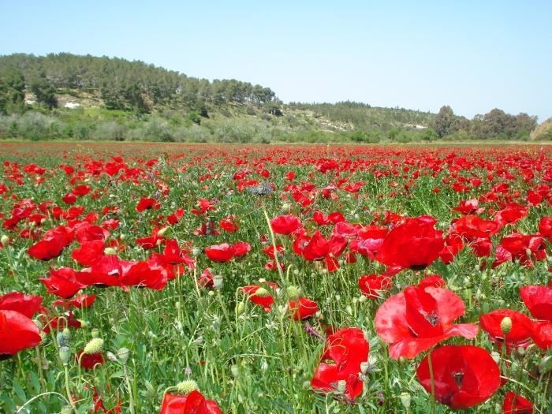
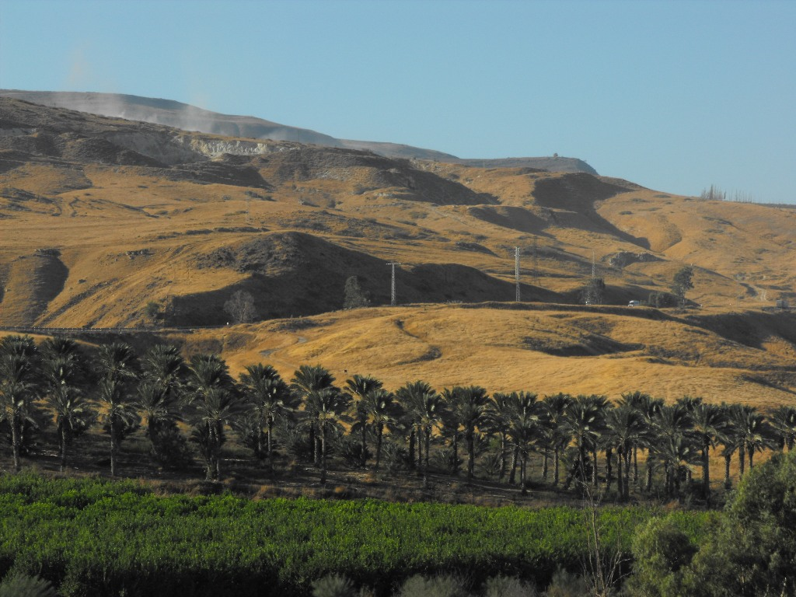

تقع فلسطين في موقع استراتيجي بين مصر ولبنان وسوريا والأردن، وهي أرض
الرسالات ومهد الحضارات الإنسانية، حيث مرت على أقدم مدينة فيها وهي أريحا،
إحدى وعشرون حضارة منذ الألف الثامن قبل الميلاد. وهي مهد الديانتين
اليهودية والمسيحية، ولهذه الأرض تاريخ طويل وجذور بالثقافة والدين
والتجارة والسياسة. وفي فلسطين تتكلم الشواهد التاريخية عن تاريخ هذه الأرض
الطويل والمتشابك منذ ما قبل التاريخ. أقدم شعب معروف استوطن هذه الأرض هم
الكنعانيون. وقد تمت السيطرة على المنطقة من قبل العديد من الشعوب
المختلفة، بما في ذلك قدماء المصريين والفلستينيين وبني إسرائيل،
والآشوريين والبابليين والفرس والإغريق والرومان والبيزنطيين، والخلافة
العربية، والصليبيون، والأيوبيين، والمماليك والعثمانيون، والبريطانيون
وأخيرا إسرائيل بعد النكبة عام 1948.
يمتد العهد البيزنطي بعد ذلك من 324 م - 636 م. فدخلت فلسطين في حوزة
البيزنطيين في الربع الأول من القرن الرابع الميلادي، في عهد الإمبراطور
قسطنطين الأول (324 - 337 م) الذي اعتنق المسيحية وجعلها دين الدولة الرسمي.
وقد شهدت فلسطين عامة أهمية خاصة في هذا العصر لكونها مهد المسيحية. وقد
احتلت مركزاً مرموقاً في العهد البيزنطي، إذ كانت الميناء الرئيس لاستقبال
الحجاج المسيحيين القادمين لزيارة الأرض المقدسة.
استمدت بيت لحم شهرتها العالمية الكبرى من مولد المسيح فيها. ويروى أن يوسف
النجار، ومريم العذراء ذهبا إلى بيت لحم لتسجيل اسمهما في الإحصاء العام،
فولدت مريم وليدها هناك. وترى المصادر المسيحية أن الولادة كانت في مغارة
قريبة من القرية، ولكن القرآن (يقول): (فَأجَآءَهَاَ المَخَاضُ إِلَى جِذعِ
النَخلَةِ)، وفي سنة 330 م بنت هيلانة أم قسطنطين الكبير، كنيسة فوق
المغارة التي قيل إن يسوع ولد فيها، وهي اليوم أقدم كنيسة في العالم.
والمغارة تقع داخل كنيسة الميلاد، ومنحوته في صخر كلسي، وتحتوي على غرفتين
صغيرتين، وفي الشمالية منها بلاطة رخامية، منزل منها نجمة فضية، حيث يقال
إن المسيح ولد هناك. وعندما دخل عمر بن الخطاب القدس، توجه إلى بيت لحم،
وفيها أعطى سكانها أمانًا خطيًا على أرواحهم وأولادهم وممتلكاتهم وكنائسهم.
ولما حان وقت الصلاة، صلى بإشارة من راهب، أمام الحنية الجنوبية للكنيسة،
التي أخذ المسلمون يقيمون فيها صلواتهم، فرادى، وجعل الخليفة على النصارى
إسراجها وتنظيفها. وهكذا صار المسلمون والمسيحيون يقيمون صلواتهم جنباً إلى
جنب.
أصبحت القدس مدينة مقدسة بالنسبة للمسلمين بعد حادثة الإسراء والمعراج
وفق المعتقد الإسلامي، وبعد أن فُرضت الصلاة على المسلمين، أصبحوا
يتوجهون أثناء إقامتها نحو المدينة، وبعد حوالي 16 شهرًا، عاد المسلمون
ليتوجهوا في صلاتهم نحو مكة بدلاً من القدس، بسبب كثرة تعيير اليهود
لمحمد وللمسلمين بسبب استقبالهم لقبلة اليهود، ولأسباب أخرى.
قد تم فتح فلسطين من قبل المسلمين، ابتداء من 634 للميلاد. في 636 م،
وقعت معركة اليرموك بين المسلمين والروم البيزنطيين في وسط بلاد الشام،
انتصر فيها المسلمون. وفي عهد عمر بن الخطاب والفتوحات الإسلامية، أًرسل
عمرو بن العاص وأبو عبيدة بن الجراح لفتح فلسطين عامة ونشر الدعوة
الإسلامية فيها، لكن القدس عصيت عليهم ولم يتمكنوا من فتحها لمناعة
أسوارها، حيث اعتصم أهلها داخل الأسوار. وعندما طال حصار المسلمين لها،
طلب رئيس البطاركة والأساقفة، المدعو «صفرونيوس»، طلب منهم أن لا يسلم
القدس إلا للخليفة عمر بن الخطاب بشخصه، فكان الفتح العمري لبيت المقدس.
كتب عمر مع المسيحيين وثيقةً عُرفت باسم «العهدة العمرية» وهي وثيقة
منحتهم الحرية الدينية مقابل الجزية، وتعهد بالحفاظ على ممتلكاتهم
ومقدساتهم
تمتلك فلسطين عدّة مناطق خصبة، أهمها المروج الشمالية بين جبال الجليل، مرج
بن عامر وبعض المروج في وسط البلاد. إمدادات المياه للمنطقة ليست وفيرة، وهي
معتمدة على مياه الأمطار التي تهطل خلال فترة 5 أشهر سنويًا لا غيرها (من
نوفمبر إلى مارس). تعد بحيرة طبريا أهم وأكبر مصادر المياه الطبيعية للشرب
والري في المنطقة، إذ كانت بحيرة الماء العذبة الوحيدة فيه. ويكون مصدر مياه
البحيرة هو مياه الأمطار الهاطلة عليها مباشرة أو مياه نهر الأردن المغذَّى
بثلوج جبل الشيخ المذوبة في موسم الربيع. نهر الأردن هو أكبر الأنهر في
المنطقة، يتدفق جنوبًا خلال بحيرة طبريا إلى البحر الميت الشديد الملوحة.
كذلك يتم ضخ مياه الشرب من الإكويفيرات (الطبقات تحت الأرضية الحاملة لمياه
الأمطار المتغلغلة في الأرض)، وفي الآونة الأخيرة تعرضت هذه الخزانات
الطبيعية تحت الأرضية للتمليح والتلوث بسبب زيادة جلب المياه منها ونقص مياه
الأمطار التي تغذيها، وكذلك بسبب دفن النفاية الصناعية في أرض المنطقة
الساحلية.
تتميز الحياة البرية في فلسطين التاريخية بتنوعها الكبير، وذلك عائد للتنوع
المناخي في المنطقة ولوقوعها في منتصف قارات العالم القديم الثلاث: آسيا
وأفريقيا وأوروبا، الأمر الذي جعل منها معبرًا لهجرة أنواع عديدة من الشمال
إلى الجنوب والعكس، وأضفى عليها أنماطا مناخية مختلفة ومتناقضة في بعض
الأحيان، مما مكّن طائفة عظيمة من الكائنات المتنوعة من استيطانها. اندثر
الكثير من أنواع الحيوانات الضخمة في فلسطين، أو في بعض أجزائها دون الأخرى،
بفعل تدمير الموائل الطبيعية لغرض الاستيطان والاستغلال البشري، أو بسبب
الصيد الجائر منذ القدم، ومنذ أواخر القرن العشرين أقيمت عدّة محميات طبيعية
في كافة أنحاء البلاد، بجهود محليّة تارة ودولية تارة أخرى، للحفاظ على ما
تبقى من أنواع حيوانية وموائل طبيعية فريدة، وقد أصاب بعض من تلك المحميات
نجاحًا باهرًا في الحفاظ على الحياة البرية ومساكنها. ويُعد اليوم التمير
الفلسطيني أو عصفور الشمس الفلسطيني، الطائر الوطني لفلسطين.
عانت الحياة البرية في فلسطين التاريخية من تداعيات الاحتلال الإسرائيلي
إضافة إلى الممارسات الضارة للمزارعين والرعاة والمصطافين. أقيمت كثير من
المستعمرات الإسرائيلية في مناطق غابات وأحراج مثل مستعمرات عيلي وأريئيل
وقدوميم وألون موريه وبراخا في نابلس ومستعمرة جبل أبو غنيم في بيت لحم
ومستعمرتي ميتاتياهو وكريات سيفر ومعظم مستعمرات هضبة الجولان. كانت
المستعمرات مسؤولة عن 78% من الخسارة في أراضي الغابات في الضفة الغربية.
إضافة إلى ذلك، تقوم إسرائيل باستغلال المناطق الطبيعية سياحيًا، مما أثر على
الحياة الطبيعية فيها. على سبيل المثال، في منطقة عين الفشخة على شاطئ البحر
الميت أزيلت الأشجار فلم يتبق سوى شجرة سنط سيال واحدة وانحسرت مساحة أشجار
الأراك إلى 3 دونمات فقط.
قد قامت عدة مؤسسات غير حكومية في داخل وخارج فلسطين بمشاريع تتضمن إعادة
زراعة الأشجار التي اُقتلعت من أراض فلسطينية جرفتها قوات الاحتلال
الإسرائيلي في الضفة الغربية وقطاع غزة المحتلين لبناء أو توسيع المستوطنات
اليهودية والطرق المؤدية اليها وإنشاء جدار الفصل العنصري. ويجري حاليا زراعة
مئات الاف أشجار الزيتون وأشجار الفواكه والنخيل في مواقع مختلفة.

توجد في الضفة الغربية 48 محمية طبيعية، بعضها أعلن كمحميات في أثناء فترة
الانتداب البريطاني على فلسطين بينما أعلنت السلطات الإسرائيلية خلال سنوات
وجودها المتعاقبة عن البقية. تبلغ مساحة المحميات مجتمعة 330700 دونم (أكثر
من 330 كم2)، وهو ما يشكل 5.6% من مساحة الضفة الغربية. توجد معظم هذه
المحميات في مناطق المنحدرات الشرقية وغور الأردن. كان الهدف الرئيس من هذه
المحميات تسهيل الاستيلاء عليها لإقامة مستعمرات جديدة، ومع ذلك، ساهمت بعض
هذه المناطق المحمية في حماية الحياة النباتية. محمية شوباش هي أكبر المحميات
بمساحة تزيد على 55 كم2. بينما أجملها محمية وادي الباذان الواقعة على بعد 5
كم إلى الشمال الشرقي من نابلس. قامت السلطة الفلسطينية ببرامج تشجير وحماية
للغابات بالتعاون مع هيئات محلية وأجنبية.
لفلسطين أهمية دينية في الديانات السماوية الثلاث: الإسلام والمسيحية
واليهودية. وخلال تاريخها اتخذت بعض النزاعات عليها طابعا دينيا مثل الحروب
الصليبية كما يعطي البعض الصراع العربي الإسرائيلي طابعا دينيا. ويشكل
الإسلام والمسيحية واليهودية الديانات الرئيسية المكونة لسكان فلسطين
التاريخية اليوم.
منذ القدم، مارس سكان فلسطين التاريخية الصناعة، حيث انتشرت الصناعة اليدوية،
بل إن بعض حارات المدن الفلسطينية سميت بأسماء هذه الحرف، مثل سوق الغزل
وحارة الزجاجيين في الخليل وسوق القطّانين في القدس، وتعد كل من الخليل وغزة
ونابلس أهم المراكز الصناعية في الأراضي التي تسيطر عليها السلطة الوطنية
الفلسطينية، حيث تشتهر في صناعة الصابون والنسيج والصناعات الخشبية والخزف
والنسيج وتصنيع المواد المعدنية ومشتقاتها والأدوات الكهربائية.
يتميز القطاع الزراعي في فلسطين التاريخية بنظام إنتاجي مكثف يعود إلى ضرورة
التعويض عن شح الموارد الطبيعية، ومنها المياه والأرض الصالحة للزراعة بوجه
خاص. وترجع الزيادة المطردة للإنتاج الزراعي إلى التعاون الوثيق بين الباحثين
والمزارعين والصناعات المرتبطة بالزراعة، حيث تقوم هذه الأطراف سوية بتطوير
وتطبيق أساليب جديدة في جميع الفروع الزراعية، لتكون النتيجة زراعة عصرية في
بلد تغطي الصحراء أكثر من نصف مساحته.

تشكل الثقافة في فلسطين جزءا لا يتجزأ من هوية الشعب الفلسطيني على مر
التاريخ والعصور، حيث كانت فلسطين حاضرة في وجدان مثقفيها من فنانين
وتشكيليين ومسرحيين. كما كان جرح فلسطين عميقًا ومؤلما في ذاكرة الشعب
الفلسطيني وما زال حاضرًا في وجدان فنانيه على امتداد العالم. مما لابد من
الإشارة إليه أن بدء ظهور المجلات والملاحق الثقافية في فلسطين يعود إلى عام
1905؛ حيث الاهتمام بنشر كتابات المثقفين الفلسطينيين في الأراضي المحتلة وفي
الشتات، إضافة إلى ما ينتجه الكثير من المثقفين وكبار الكتاب والشعراء
والأدباء العرب المناصرين للقضية الفلسطينية.
.png)